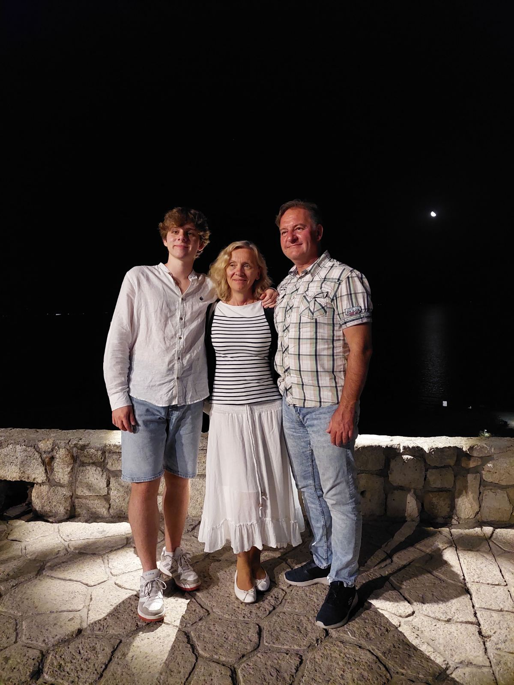
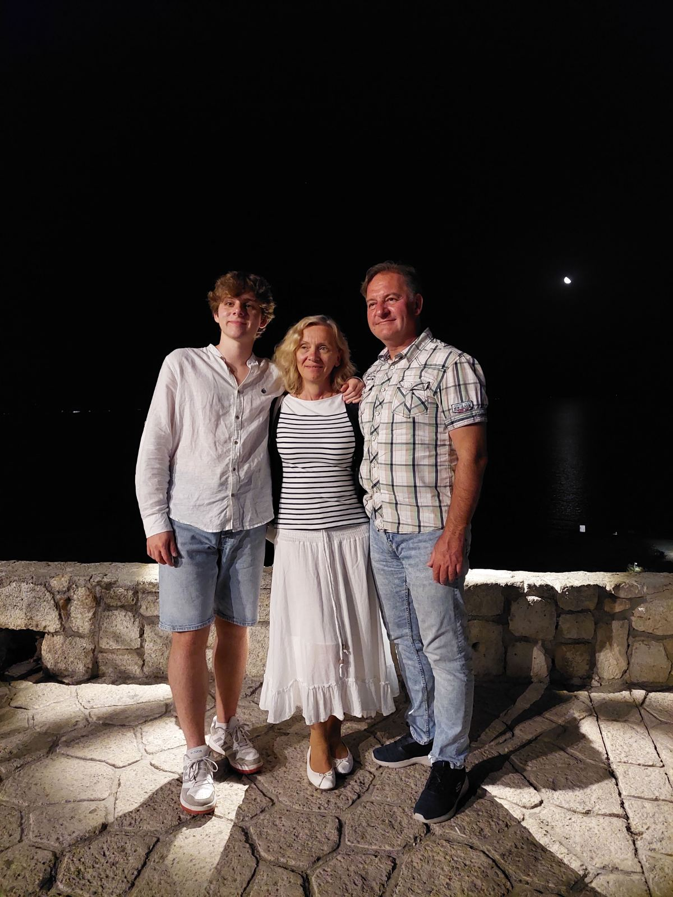

A glimpse into my world
My name is Nikola Jordanoski, and I was born on August 28, 2003. I reside in the vibrant city of Skopje, North Macedonia, specifically in the neighborhood of Crnice. One fascinating aspect about me is my mixed nationalities. My mother is half Czech, and my father is half Serbian, which has bestowed upon me a unique blend of cultural qualities.
Languages have always fascinated me, and I've taken that interest to heart by becoming proficient in five different languages: Macedonian, English, Czech, Serbian, and even a bit of German. It's an enriching experience to communicate and connect with people from diverse backgrounds using their native tongues.
When I was little I went to my local kindergarten, 8-March, where I met my childhood friends, which till this day I am still in contact with some of them. I finished elementary school at Kuzman Josifovski-Pitu and high school in Rade Jovcevski-Korcagin with straight A's. I also completed media design courses and participated in Brain-O-Brain (a type of a mathematical course).
I have a strong passion for sports, particularly tennis and football. Despite a knee injury, I continue personal training at home and enjoy playing friendly matches with my friends. I am fascinated by cars. Additionally, I have developed a growing interest in computer science. Also, I am a big nerd and I love gaming. Finding joy in titles like Forza Horizon 5, FIFA, and Minecraft.
Download CV